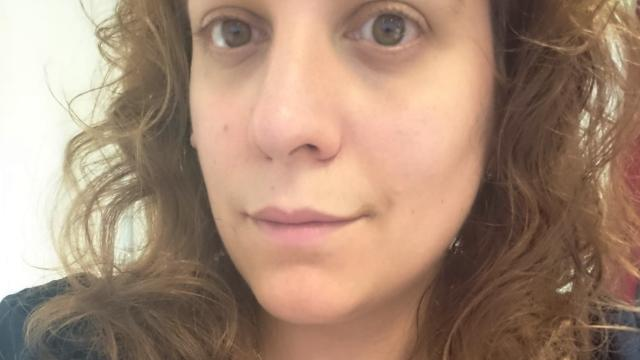
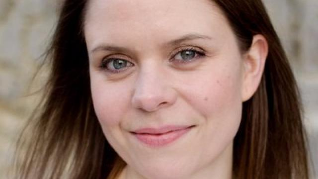
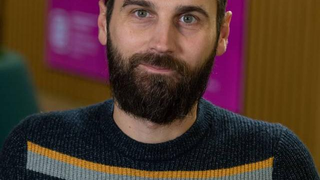
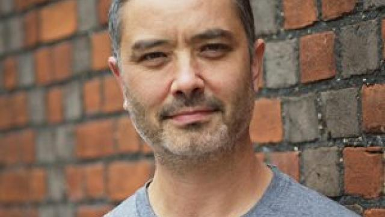
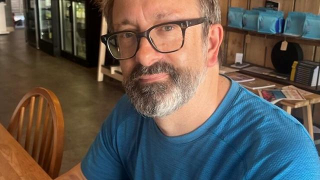
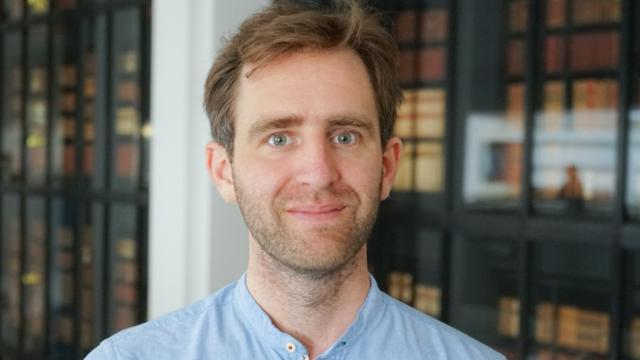
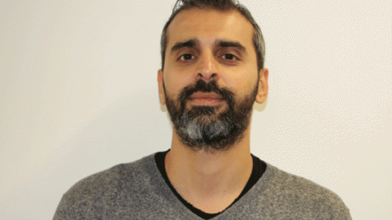

02–05 July 2024
Venue: Edinburgh Futures Institute
CDCS is delighted to announce the Digital Humanities and Research Software Engineering Summer School 2024. The Summer School was co-organised by the Edinburgh Centre for Data, Culture and Society, Cambridge Digital Humanities, King’s Digital Lab and The Alan Turing Institute.
Since 2021, a partnership of UK institutions has been involved in the creation and delivery of a summer school aimed at researchers in the digital humanities who intend to professionalise their software engineering skills.
The event was co-organised by the Edinburgh Centre for Data, Culture and Society, represented by Lucia Michielin; Cambridge Digital Humanities, represented by Mary Chester-Kadwell and Jonathan Blaney; King’s Digital Lab, represented by Neil Jakeman; and The Alan Turing Institute, represented by Federico Nanni. It was supported by the Data/Culture Project, AHRC Grant Ref: AH/Y00745X/1, and the Society of Research Software Engineering.
The event has previously been hosted by The Alan Turing Institute and Cambridge Digital Humanities.
The 2024 Summer School, hosted at the Edinburgh Futures Institute, combined talks and practical activities and explored how the intersection of digital humanities and software engineering is shaped across different UK institutions. Participants had an opportunity to gain an invaluable insight into the roles and practices of Research Software Engineering in Digital Humanities research. Each day one of the partner institutions took the lead in showcasing the practicalities of working in the field. Mornings started with presentations on topics ranging from careers in RSE to project life cycles. Afternoon sessions consisted of hands-on activities spanning topics such as effective data visualisation, sustainable coding and peer programming.
This event was aimed at those with an interest in becoming a Research Software Engineer in the humanities, or using research software engineering practices in their current or future role. It was ideal for those who already had a few years of experience in coding and may have been familiar with some computational methods within humanities projects.
It was designed to help prepare those who had worked in Digital Humanities for a few years to move into Research Software Engineering, or to adopt RSE practices more deeply into their technical research practice. Coding itself was not taught, and participants were expected to already be familiar with a programming language, preferably with some knowledge of Python.
The organisers were committed to creating a friendly and respectful place for learning, teaching and contributing for all. Participation by individuals from groups historically under-represented in the software engineering and data science sectors in the UK was strongly encouraged. All participants were expected to adhere to the Code of Conduct, set out as part of the Terms and Conditions document.
Thanks to the support of The Alan Turing Institute and the Society of Research Software Engineering, a limited number of bursaries were available to cover costs towards travel and accommodation. They were allocated based on the following criteria:
If the number of bursary applications meeting the criteria exceeded the number of bursaries available, bursaries were assigned based on how well applications aligned with the target audience. Available funds did not cover travel for attendees arriving from outside the UK.
Thanks to the support of The Alan Turing Institute, through the Sustainable Communities Around Arts and Humanities Datasets and Tools Project, participation was free for those who were offered a place on the course.
Applicants were asked to fill out a form, providing general information about themselves, including email and affiliation, and answering three questions used as part of the selection process. The Summer School had a limited number of places available. Candidates were assessed based on both their application and how well they aligned with the target audience.
The schedule below summarises the Summer School programme.
| Tuesday | Wednesday | Thursday | Friday | ||||
|---|---|---|---|---|---|---|---|
| Centre for Data, Culture and Society | Cambridge Digital Humanities | King’s Digital Lab | The Alan Turing Institute | ||||
| 08:40–09:10 | Registration | 09:00–09:15 | Introduction and Society of RSE presentation | 09:00–09:30 | Introduction and SSI talk | 09:00–09:30 | Introduction and DHRSE IEUK network talk |
| 09:10–09:30 | Welcome and Introduction | 09:15–10:30 | DH and RSE at Cambridge | 09:30–10:30 | Digital creative approaches for research and engagement | 09:30–10:30 | MapReader: open-source software library for analysing large map collections |
| 09:30–10:30 | Project Deep Dive | 10:30–11:00 | Coffee Break | 10:30–11:00 | Coffee Break | 10:30–11:00 | Coffee Break |
| 10:30–11:00 | Coffee Break | 11:00–12:30 | Sustainable code for research | 11:00–12:30 | Digital creative approaches for research and engagement | 11:00–11:45 | DH and RSE practices: the Seshat Project |
| 11:00–12:30 | DH and RSE at Edinburgh | 12:30–13:30 | Lunch | 12:30–13:30 | Lunch | 11:45–12:30 | DH and RSE practices: Living with Machines |
| 12:30–13:30 | Lunch | 13:30–15:00 | Applying Best Practices for Sustainable Code | 13:30–15:00 | Constructing an immersive experience from a research scenario | 12:30–13:30 | Lunch |
| 13:30–15:00 | Data visualisation with R | 15:00–15:30 | Coffee Break | 15:00–15:30 | Coffee Break | 13:30–15:00 | Collaborative coding |
| 15:00–15:30 | Coffee Break | 15:30–17:00 | Applying Best Practices for Sustainable Code | 15:30–17:00 | Constructing an immersive experience from a research scenario | 15:00–15:30 | Coffee Break |
| 15:30–17:00 | Custom data visualisation with D3 | 17:30–19:00 | Reception | 15:30–17:00 | Collaborative coding | ||
| 20:00–22:00 | Ceilidh Club | 17:30–19:00 | Drinks at the Pear Tree | ||||
The 2024 Summer School combined talks and practical activities and explored how the intersection of digital humanities and software engineering is shaped across different UK institutions. Participants gained insight into the roles and practices of Research Software Engineering in Digital Humanities research. Each day one of the partner institutions took the lead in showcasing the practicalities of working in the field.
Welcome and Introduction
Lucia Michielin, Digital Skills Training Manager, Edinburgh Futures Institute, and Lisa Otty, Director, Edinburgh Centre for Data, Culture and Society.
Project Deep Dive: Coding my way out of a box: Achieving emancipation and collaboration through the Digital Humanities
Professor Will Lamb, Professor in Gaelic Ethnology and Linguistics, University of Edinburgh, explored the intersections between Celtic Studies and Digital Humanities at the University of Edinburgh, highlighting his transition from ethnology and linguistics to Natural Language Processing.
DH and RSE at Edinburgh
This panel explored what it means to work as a Research Software Engineer within the Humanities and Social Sciences College at the University of Edinburgh. Speakers included Ed MacKenzie, Alexis Pister, and Evan Morgan.
Data visualisation with R
Lucia Michielin and Aislinn Keogh guided participants from basic to advanced data visualisation techniques using RStudio and the ggplot2 package.
Custom data visualisation with D3
Sarah Schöttler and Aislinn Keogh introduced custom data visualisations using D3.js and Observable.
Welcome and Society of Research Software Engineering talk
Mary Chester-Kadwell, Lead RSE, Cambridge Digital Humanities.
DH and RSE in Cambridge: Encouraging Sustainability in Digital Humanities Projects
Dr Michael Hawkins, Senior Developer, Cambridge University Library, discussed strategies for encouraging long-term sustainability in digital humanities projects.
Bridging the Gap between Philology of Middle Eastern Texts and Data Science
Dr Estara Arrant, Postdoctoral Research Associate, Cambridge University Library, described how data science tools and methods can support the linguistic and historical study of the Medieval Middle East.
Careers Panel
The panel included Mary Chester-Kadwell, Jonathan Blaney, Estara Arrant and Michael Hawkins.
Sustainable code for research
Mary Chester-Kadwell introduced best practices for sustainable code, including version control, dependency management, documentation, refactoring, testing, open source practice and publishing.
Evaluating GitHub Repositories
Jonathan Blaney led a session examining GitHub repositories to explore good and less effective practices for writing sustainable code.
Applying Best Practices for Sustainable Code
Dr Lidea Shahidi, RSE Methods Fellow, Cambridge Digital Humanities, led a hands-on session on coding design principles and preparing code for sharing.
Introduction and SSI Talk
Speakers included Neil Jakeman, Elliot Hall, and Oscar Seip.
Digital creative approaches for research and engagement
Neil Jakeman and Elliot Hall introduced digital tools and creative methods for enhancing research and engagement strategies.
Constructing an Immersive Experience from a Research Scenario
This hands-on workshop asked participants to develop a strategy and implementation plan for a heritage organisation seeking to share collections more effectively through digital means.
Introduction and DHRSE IEUK network talk
Federico Nanni, Senior Research Data Scientist, The Alan Turing Institute, introduced the day.
Research Software Engineering in the Arts and Humanities: a community-driven approach
Stavros Angelis, Senior Technical Officer and Digital Officer, Arts and Humanities Institute, Maynooth University, discussed the need for RSE capability in the arts and humanities.
MapReader, open-source software library for analysing large map collections
Rosie Wood, Research Data Scientist, The Alan Turing Institute, discussed her work on MapReader, an end-to-end computer vision pipeline for image classification aimed at researchers working with historic maps.
DH and RSE practices: the Seshat Project
Ed Chalstrey, Research Data Scientist, The Alan Turing Institute, discussed work integrating historical geospatial data into the Seshat Global History Databank.
DH and RSE practices: Living with Machines
Kaspar Beelen, Technical Lead, School of Advanced Study, discussed collaboration in large-scale digital humanities projects, focusing on Living with Machines.
Collaborative Coding
Federico Nanni led a hands-on workshop on collaboratively writing and reviewing code using GitHub Issues, Git branches and Pull Requests.
The Summer School took place in central Edinburgh, close to many of the main attractions of the city. The venue was easily accessible by public transport, and a wide range of accommodation was available nearby.
Participants were invited to a night of folk music and dancing at the Ceilidh Club hosted by Summerhall. No prior experience of ceilidh dancing was necessary, and a caller introduced the moves at the start of each dance.
Time: 20:00–23:00
The Ceilidh Club cost £10 per person and was paid for at attendees’ own expense.
After the conclusion of teaching on Thursday, participants were invited to a drinks reception. This was a chance to meet and socialise with fellow Summer School attendees, lecturers and instructors in an informal setting.
Time: 17:30–19:00
Attendance was free, with complimentary food and drinks available.
To celebrate the end of the week, attendees were invited to the Pear Tree Beer Garden, weather permitting.
Time: 17:30–19:00
Food and drink were available at attendees’ own expense.
Lunches, mid-morning and mid-afternoon coffee breaks were provided for the whole duration of the Summer School. Attendees were asked to indicate food allergies or dietary requirements upon acceptance.
Nearby recommendations for coffee and treats included Uplands Roast, Considerit Chocolate, Söderberg The Meadows, Thomas J Walls, and The Coffee Mill Cafe.
The Central Campus area offers plenty of dining options, from quick bites to more relaxed meals. Recommended restaurants included Ting Thai Caravan, El Cartel, Mother India’s Café, City Restaurant, Mosque Kitchen, Pizza Posto, 10 to 10 in Delhi, Maki and Ramen, Café Andaluz and Erbil.
Recommended pubs around campus included Doctor’s Pub, The Pear Tree, The Dagda Bar, The Dog House, Bennet’s Bar, The Devil’s Advocate, The Ensign Ewart, Cloisters Bar, Captain’s Bar, and Paradise Palms.
The venue for the Summer School was the newly refurbished Edinburgh Futures Institute building, centrally located close to the main attractions of the city. It is easily accessible by public transport, and a wide range of accommodation is available nearby. Hotels, bed and breakfasts, vacation apartments and hostels can be booked through services such as Booking or Airbnb.
Because the programme took place outside term time, attendees could also check accommodation facilities offered by the University of Edinburgh. Most University accommodation is located just to the east and south of the Central Campus area. More details are available from the University of Edinburgh Hospitality and Events Collection.
If travelling to Edinburgh, participants may have wished to stay longer to visit the city. With classes finishing around 17:15, there were also opportunities to visit attractions in the evenings.
The Central Campus is around a 10-minute walk to Edinburgh Castle, and only around 5 minutes from the National Museum of Scotland. In around 15 minutes, visitors can reach the National Gallery of Scotland and Princes Street. After a slightly longer walk, visitors can climb Arthur’s Seat or visit the Palace of Holyroodhouse.
Reaching Edinburgh by train is straightforward, with the main rail hub, Edinburgh Waverley, located in the heart of the city and around a 15-minute walk from the Summer School venue.
Approximate journey times include:
The main companies operating at Edinburgh Waverley include LNER, ScotRail, Caledonian Sleeper, Avanti West Coast, CrossCountry and TransPennine Express.
Classes took place in the Central Campus area of the University of Edinburgh, which is well connected to a reliable public transport network.
Bus: the closest bus stops are Lauriston Place and Forrest Road, while the Surgeon’s Hall stop is within a short walking distance.
Tram: the tram runs from the airport in the west to Ocean Terminal in Leith. The closest stop to the University is York Place, around a 20-minute walk from campus.
A route planner is available on the Lothian Buses website.
If travelling to Edinburgh by coach, there are plenty of affordable options. Coach companies operating to and from the city include:
The coach station is located at St Andrew Square, close to Princes Street and right in the city centre. From there, it is around a 20-minute walk to the Summer School venue.
The organisers were committed to providing the safest environment possible for attendees. Participants were asked to be considerate of others’ personal space and not to attend if they felt unwell. Ventilation was ensured in the rooms used, surfaces were regularly sanitised by staff and hand hygiene facilities were supplied.
Attendees with accessibility requirements were asked to contact the organisers in advance so that any necessary measures could be put in place. Edinburgh Futures Institute features accessible entrances, accessible WCs, braille on signage, and door handles at a level accessible for wheelchair users. There are lifts on all floors.
Further information about the accessibility of University of Edinburgh buildings can be found on the University Estates accessibility information page.
The learning experience was great and I am very happy to have participated.

Lucia’s main responsibilities involve managing and developing the Centre for Data, Culture and Society Training Programme, which focuses on providing training in applied digital research across the College of Arts, Humanities and Social Science. Her research background in Digital Humanities has equipped her with experience in applying digital methods to research projects and supporting data-intensive projects.

Mary is a Senior Software Engineer at Cambridge University Library. Originally from a humanities background, she has a PhD in the landscape archaeology and material culture of early medieval England using computational methods. She advises researchers on technical project development, teaches coding and software engineering practices, and is a Trustee of the Society of Research Software Engineering.

Federico is a Senior Research Data Scientist at The Alan Turing Institute, working as part of the Research Engineering Group. He has a background in Natural Language Processing and Information Retrieval in the context of Digital Humanities and Computational Social Science.

Neil joined the Department of Digital Humanities as a Research Developer in 2011. His role within King’s Digital Lab has evolved to encompass cultivating new projects and relationships in the digital community and beyond. As a Project Analyst, he has particular responsibility for projects involving digital creative practice in emerging technologies.

Jonathan is Digital Humanities Research Software Engineer at Cambridge Digital Humanities. Previously, he worked on Digital Humanities projects at the Institute of Historical Research, University of London, and at the Oxford Digital Library in the Bodleian. Earlier in his career, he worked as a lexicographer at Oxford University Press.
Research Data Scientist, The Alan Turing Institute
Senior Research Data Scientist at The Alan Turing Institute
Digital Humanities Research Software Engineer at Cambridge Digital Humanities
Research Application Manager, The Alan Turing Institute

Technical Lead, Digital Humanities at the School of Advanced Study, University of London
EFI Digital Skills Training Manager
Senior Software Engineer at Cambridge University Library
Senior Developer, Cambridge University Library
Senior Research Software Analyst at King’s Digital Lab
Research Data Scientist, The Alan Turing Institute

Senior Technical Officer, Arts and Humanities Institute, Maynooth University